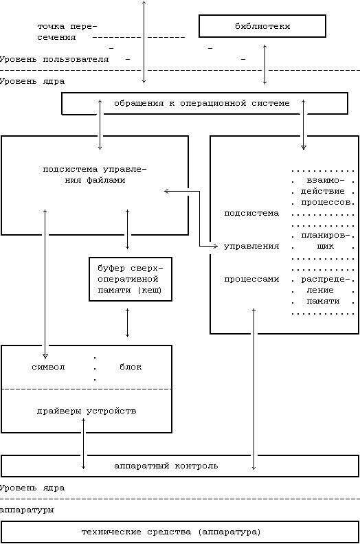

В предыдущей главе был сделан только поверхностный обзор особенностей операционной среды UNIX. В этой главе основное внимание уделяется ядру операционной системы, делается обзор его архитектуры и излагаются в общих чертах основные понятия и структуры, существенные для понимания всего последующего материала книги.
Как уже ранее было замечено (см. [Christian 83], стр.239), в системе UNIX создается иллюзия того, что файловая система имеет "места" и что у процессов есть "жизнь". Обе сущности, файлы и процессы, являются центральными понятиями модели операционной системы UNIX. На Рисунке 2.1 представлена блок-схема ядра системы, отражающая состав модулей, из которых состоит ядро, и их взаимосвязи друг с другом. В частности, на ней слева изображена файловая подсистема, а справа подсистема управления процессами, две главные компоненты ядра. Эта схема дает логическое представление о ядре, хотя в действительности в структуре ядра имеются отклонения от модели, поскольку отдельные модули испытывают внутреннее воздействие со стороны других модулей.
Схема на Рисунке 2.1 имеет три уровня: уровень пользователя, уровень ядра и уровень аппаратуры. Обращения к операционной системе и библиотеки составляют границу между пользовательскими программами и ядром, проведенную на Рисунке 1.1. Обращения к операционной системе выглядят так же, как обычные вызовы функций в программах на языке Си, и библиотеки устанавливают соответствие между этими вызовами функций и элементарными системными операциями, о чем более подробно см. в главе 6. При этом программы на ассемблере могут обращаться к операционной системе непосредственно, без использования библиотеки системных вызовов. Программы часто обращаются к другим библиотекам, таким как библиотека стандартных подпрограмм ввода-вывода, достигая тем самым более полного использования системных услуг. Для этого во время компиляции библиотеки связываются с программами и частично включаются в программу пользователя. Далее мы проиллюстрируем эти моменты на примере.
На рисунке совокупность обращений к операционной системе разделена на те обращения, которые взаимодействуют с подсистемой управления файлами, и те, которые взаимодействуют с подсистемой управления процессами. Файловая подсистема управляет файлами, размещает записи файлов, управляет свободным пространством, доступом к файлам и поиском данных для пользователей. Процессы взаимодействуют с подсистемой управления файлами, используя при этом совокупность специальных обращений к операционной системе, таких как open (для того, чтобы открыть файл на чтение или запись),close, read, write, stat (запросить атрибуты файла), chown (изменить запись с информацией о владельце файла) и chmod (изменить права доступа к файлу). Эти и другие операции рассматриваются в главе 5.
Подсистема управления файлами обращается к данным, которые хранятся в файле, используя буферный механизм, управляющий потоком данных между ядром и устройствами внешней памяти. Буферный механизм, взаимодействуя с драйверами устройств ввода-вывода блоками, инициирует передачу данных к ядру и обратно. Драйверы устройств являются такими модулями в составе ядра, которые управляют работой периферийных устройств. Устройства ввода-вывода блоками относятся программы пользователя

Рисунок 2.1. Блок-схема ядра операционной системы
к типу запоминающих устройств с произвольной выборкой; их драйверы построены таким образом, что все остальные компоненты системы воспринимают эти устройства как запоминающие устройства с произвольной выборкой. Например, драйвер запоминающего устройства на магнитной ленте позволяет ядру системы воспринимать это устройство как запоминающее устройство с произвольной выборкой. Подсистема управления файлами также непосредственно взаимодействует с драйверами устройств "неструктурированного" ввода-вывода, без вмешательства буферного механизма. К устройствам неструктурированного ввода-вывода, иногда именуемым устройствами посимвольного ввода-вывода (текстовыми), относятся устройства, отличные от устройств ввода-вывода блоками.
Подсистема управления процессами отвечает за синхронизацию процессов, взаимодействие процессов, распределение памяти и планирование выполнения процессов. Подсистема управления файлами и подсистема управления процессами взаимодействуют между собой, когда файл загружается в память на выполнение (см. главу 7): подсистема управления процессами читает в память исполняемые файлы перед тем, как их выполнить.
Примерами обращений к операционной системе, используемых при управлении процессами, могут служить fork (создание нового процесса), exec (наложение образа программы на выполняемый процесс), exit (завершение выполнения процесса), wait (синхронизация продолжения выполнения основного процесса с моментом выхода из порожденного процесса), brk (управление размером памяти, выделенной процессу) и signal (управление реакцией процесса на возникновение экстраординарных событий). Глава 7 посвящена рассмотрению этих и других системных вызовов.
Модуль распределения памяти контролирует выделение памяти процессам. Если в какой-то момент система испытывает недостаток в физической памяти для запуска всех процессов, ядро пересылает процессы между основной и внешней памятью с тем, чтобы все процессы имели возможность выполняться. В главе 9 описываются два способа управления распределением памяти: выгрузка (подкачка) и замещение страниц. Программу подкачки иногда называют планировщиком, т.к. она "планирует" выделение памяти процессам и оказывает влияние на работу планировщика центрального процессора. Однако в дальнейшем мы будем стараться ссылаться на нее как на "программу подкачки", чтобы избежать путаницы с планировщиком центрального процессора.
Модуль "планировщик" распределяет между процессами время центрального процессора. Он планирует очередность выполнения процессов до тех пор, пока они добровольно не освободят центральный процессор, дождавшись выделения какого-либо ресурса, или до тех пор, пока ядро системы не выгрузит их после того, как их время выполнения превысит заранее определенный квант времени. Планировщик выбирает на выполнение готовый к запуску процесс с наивысшим приоритетом; выполнение предыдущего процесса (приостановленного) будет продолжено тогда, когда его приоритет будет наивысшим среди приоритетов всех готовых к запуску процессов. Существует несколько форм взаимодействия процессов между собой, от асинхронного обмена сигналами о событиях до синхронного обмена сообщениями.
Наконец, аппаратный контроль отвечает за обработку прерываний и за связь с машиной. Такие устройства, как диски и терминалы, могут прерывать работу центрального процессора во время выполнения процесса. При этом ядро системы после обработки прерывания может возобновить выполнение прерванного процесса. Прерывания обрабатываются не самими процессами, а специальными функциями ядра системы, перечисленными в контексте выполняемого процесса.
Предыдущая глава || Оглавление || Следующая глава
{kind=link}
{kind=link}